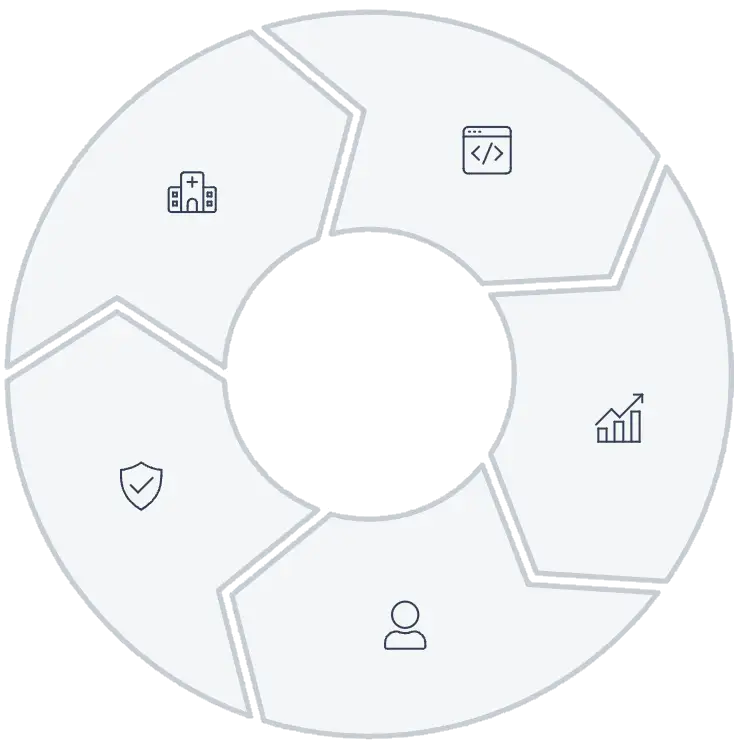

Zorgtechnologie
De toekomst van interoperabiliteit in de Nederlandse zorg
Hoe open standaarden zoals FHIR en HL7 de basis leggen voor een geïntegreerd zorglandschap. Een analyse van de Wegiz, EHDS en de rol van het CareHub-ecosysteem.
Lees meer